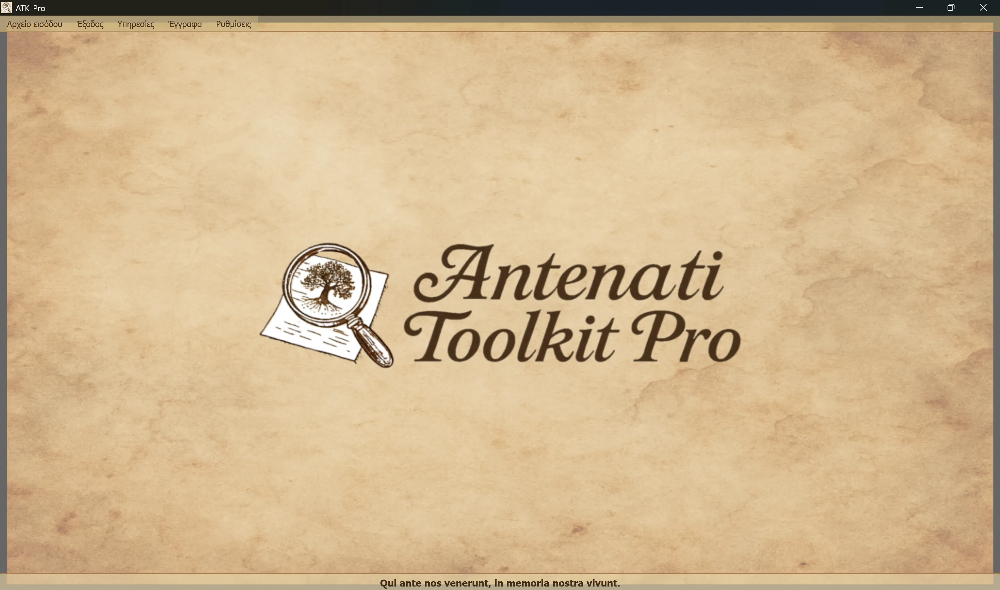

──────────────────── ──────────────────── ──────────────────── ────────────────────
🪟 Windows
ATK-Pro-Setup-vx.x.x.exe από την επίσημη σελίδα έκδοσης🐧 Linux
ATK-Pro-vx.x.x.deb (Debian/Ubuntu) ή .tar.gz από τη σελίδα Έκδοσηsudo dpkg -i ATK-Pro-vx.x.x.deb ή κάντε διπλό κλικ στο Nautilus/Files./ATK-Pro από τον εξαγόμενο φάκελο🍎 macOS
ATK-Pro-vx.x.x.dmg από τη σελίδα Έκδοση🪟 Windows
C:\Program Files\ATK-Pro\C:\Users\[TuoNome]\Documents\ATK-Pro\output\C:\Users\[TuoNome]\Documents\ATK-Pro\input\🐧 Linux
/opt/ATK-Pro/ (deb) ή φάκελος εξαγωγής (.tar.gz)~/Documents/ATK-Pro/output/~/Documents/ATK-Pro/input/🍎 macOS
/Applications/ATK-Pro.app~/Documents/ATK-Pro/output/~/Documents/ATK-Pro/input/──────────────────── ──────────────────── ──────────────────── ────────────────────
Οι διαθέσιμες γλώσσες είναι:
με το οποίο, με βάση τα διαθέσιμα στοιχεία στο τέλος του 2025, υπολογίζεται ότι μπορούμε να καλύψουμε περίπου το 98% των απογόνων Ιταλών και ιταλόφωνων ή ιταλόφωνων κοινοτήτων διάσπαρτων σε όλο τον κόσμο.
Κατά την πρώτη εκτέλεση, το πρόγραμμα δημιουργεί αυτόματα τους ακόλουθους φακέλους:
C:\Users\[TuoNome]\Documents\ATK-Pro\output\C:\Users\[TuoNome]\Documents\ATK-Pro\output\doc\ (προεπιλεγμένα έγγραφα)C:\Users\[TuoNome]\Documents\ATK-Pro\output\reg\ (προεπιλεγμένα μητρώα)~/Documents/ATK-Pro/output/input\ ανάλογο (προαιρετικό, για αρχείο εισόδου)Δημιουργούνται προσωρινοί φάκελοι για τα ληφθέντα πλακίδια κατά την επεξεργασία (tiles_canvas_X/) και, εάν ζητηθεί PDF, προσωρινά αρχεία για τη δημιουργία του.
Όλοι οι φάκελοι και τα προσωρινά αρχεία διαγράφονται αυτόματα μετά την ολοκλήρωση της επεξεργασίας.
Απομένουν μόνο τα τελικά επεξεργασμένα αρχεία (εικόνες στις επιλεγμένες μορφές, PDF, δήλωση και μεταδεδομένα).
Για να αλλάξετε τους φακέλους εξόδου, χρησιμοποιήστε το Μενού → Ρυθμίσεις → "Επιλογή φακέλων εξόδου". Οι επιλογές σας αποθηκεύονται και επαναφέρονται αυτόματα στην επόμενη συνεδρία.
Η εντολή Ρυθμίσεις → Προφίλ πόρων προσαρμόζει τον παραλληλισμό που χρησιμοποιείται κατά τη λήψη, την ανακατασκευή εικόνας και τη δημιουργία PDF:
Το προφίλ δεν αλλάζει την ποιότητα, τα δικαιώματα ή την ποσότητα των εγγράφων που αποκτήθηκαν. Τα όρια προληπτικής εποπτείας ειδικά για την πύλη εξακολουθούν να έχουν προτεραιότητα.
──────────────────── ──────────────────── ──────────────────── ────────────────────
Το κύριο παράθυρο του Antenati Toolkit Pro έχει μια απλή και διαισθητική δομή.

Στο κάτω μέρος υπάρχει το λατινικό μότο «Qui ante nos venerunt, in memoria nostra vivunt», για να θυμόμαστε τη σημασία των ριζών και της συλλογικής μνήμης.
Στο επάνω μέρος του παραθύρου, κάτω από την κεφαλίδα:
[Εισαγωγή αρχείων] [Έξοδος] [Υπηρεσίες] [Έγγραφα] [Ρυθμίσεις]
Κάθε μενού περιέχει συγκεκριμένα κουμπιά και επιλογές (δείτε την επόμενη ενότητα).
Διαχειρίζεται τη φόρτωση των εγγραφών IIIF:
├─ Esempio input
│ └─ Visualizza il file di esempio (mostra formato coppie: modalità D/R + URL)
├─ Apri input
│ └─ Seleziona un file .txt con i tuoi record IIIF
│ (Deve contenere coppie: modalità D/R su riga 1, URL su riga 2)
└─ Modifica input
└─ Modifica il file input attualmente caricato
(Aggiungi/rimuovi record, cambia URL, salva modifiche)
Διαχειρίζεται την επεξεργασία και την έξοδο:
├─ Elabora │ └─ Avvia il download, la ricostruzione e il salvataggio delle immagini │ (Mostra finestra di progresso in tempo reale) ├─ Apri cartella output │ └─ Apre in Esplora Risorse la cartella con i file elaborati └─ Visualizza elaborazioni precedenti └─ Lista dei record già elaborati
Κατάλογος ολοκληρωμένων υπηρεσιών:
├─ Ricerca assistita AI │ └─ Suggerisce portali, piste di ricerca e query genealogiche da verificare ├─ Visualizzazione Immagini │ └─ Viewer immagini scaricate e/o PDF generati ├─ Visualizzazione Metadati JSON │ └─ JSON originali e metadati (genealogici, tecnici, EXIF) ├─ OCR Avanzato │ └─ Testi manoscritti ottocenteschi, latino ecclesiastico, tardo-medievali ├─ Traduzione OCR │ └─ Traduzione automatica testi estratti nelle lingue selezionate └─ Esportazione GEDCOM └─ GEDCOM, Gramps, Family Tree Maker, Ancestry, MyHeritage, WikiTree, etc.
Πρόσβαση σε πόρους και τεκμηρίωση:
├─ Disclaimer - Clausole legali e termini d'uso ├─ Presentazione autore - Background dell'autore del progetto ├─ Presentazione progetto - Storia, motivazioni, roadmap di ATK-Pro ├─ Guida - Indice principale della guida modulare └─ Informazioni - Versione, copyright, email di contatto
Γενική διαμόρφωση προγράμματος:
├─ Cambia lingua
│ └─ Seleziona la lingua dell'interfaccia (richiede riavvio)
├─ Seleziona formati immagine
│ └─ Scegli tra PNG, JPG, TIFF e PDF (almeno 1 obbligatorio)
│ PDF può essere selezionato da solo o insieme ai formati immagine
│ La scelta viene memorizzata e pre-selezionata automaticamente alla sessione successiva
├─ Seleziona cartelle output
│ └─ Apre prima la scelta della modalità cartelle, poi le finestre di selezione:
│ • Cartella unica per tutti → una sola cartella per documenti e registri
│ • Cartelle separate doc/reg → una cartella per tutti i doc, una per tutti i reg
│ • Cartella per ogni record → una cartella distinta per ciascun record
│ La modalità e le cartelle vengono memorizzate e ripristinate alla sessione successiva
├─ Esporta configurazione
│ └─ Salva le impostazioni attuali in un file
├─ Importa configurazione
│ └─ Carica un file di impostazioni precedentemente salvato (ripristina tutte le preferenze e percorsi)
├─ Verifica aggiornamenti
│ └─ Controlla la disponibilità di nuove versioni del programma
└─ Chiudi
└─ Termina il programma (mostra banner di supporto PayPal.me)
──────────────────── ──────────────────── ──────────────────── ────────────────────
Το ATK-Pro είναι διαθέσιμο σε 20 γλώσσες:
Η γλώσσα μπορεί να αλλάξει ανά πάσα στιγμή μέσω Μενού → Ρυθμίσεις → Αλλαγή γλώσσας.
Το πρόγραμμα απαιτεί επανεκκίνηση για την εφαρμογή της νέας γλώσσας.
Κατά την επανεκκίνηση, το πρόγραμμα φορτώνει αυτόματα τη νέα επιλεγμένη γλώσσα.
Με την αλλαγή γλώσσας μεταφράζονται τα ακόλουθα:
Εάν ένα προεπιλεγμένο μοντέλο αποσυρθεί ή πάψει να είναι διαθέσιμο, το ATK-Pro ελέγχει τον κατάλογο που είναι ορατός στα διαπιστευτήρια, επιλέγει ένα μοντέλο γενικής χρήσης συμβατό με τη λειτουργία και με εικόνες όταν απαιτείται και δοκιμάζει έως τρεις εναλλακτικές. Η εφεδρική επιλογή δεν ενεργοποιείται για σφάλματα ορίου, δικτύου ή ελέγχου ταυτότητας.
Παράκαμψη μοντέλου: ένα μοντέλο που εισάγεται χειροκίνητα παραμένει δεσμευτικό και δεν αντικαθίσταται ποτέ αυτόματα.